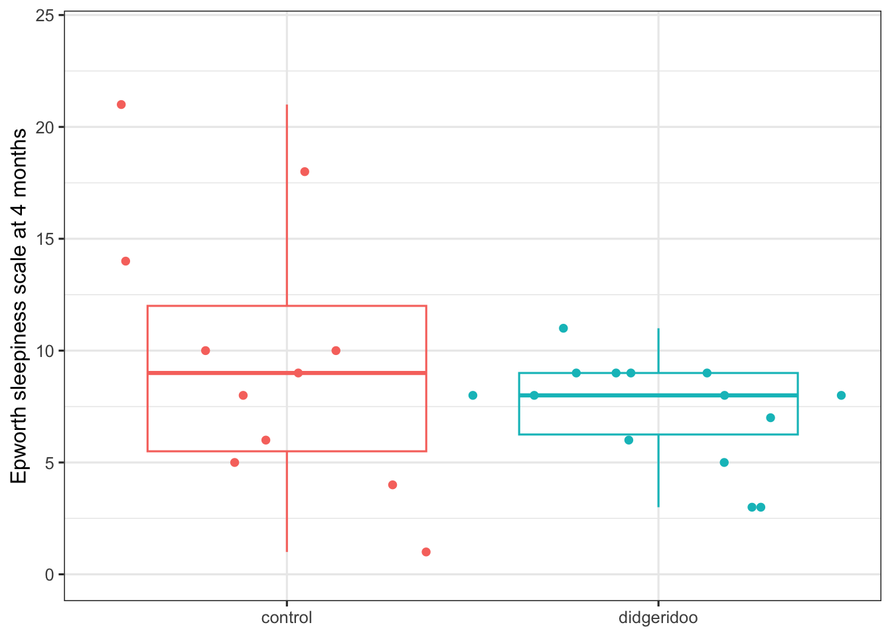

2 Statistical Methods for Continuous Outcomes
2.1 The Didgeridoo study
To discuss statistical methods for continuous outcomes, we use data from the didgeridoo study (Puhan et al. (2006)). In this RCT, participants with obstructive sleep apnea were randomized either to didgeridoo lessons with daily practice or to a waiting list for such lessons (control arm).
The primary endpoint is the Epworth Sleepiness Scale (ESS), a measure of daytime sleepiness on a scale from 0 (not sleepy in any situation) to 24 (very likely to fall asleep in all situations). We have data on this outcome at baseline (epworth1) and at 4 months (epworth2). (The data have been simplified for this tutorial.)
Code
didgeridoo <- tibble(id = 1:25,
trt = c(1, 2, 1, 2, 1, 2, 1, 1, 2, 2, 2, 2, 1, 1, 1,
2, 2, 2, 1, 1, 2, 2, 1, 2, 2),
age = c(45, 41, 41, 39, 33, 55, 50, 65, 43, 59, 53,
54, 49, 43, 56, 41, 53, 46, 39, 43, 50, 57, 53, 57, 51),
gender = c(0, 1, 0, 0, 0, 1, 1, 1, 0, 0, 0, 0, 0, 0, 0,
0, 0, 0, 0, 0, 0, 0, 0, 0, 0),
bmi = c(26.1, 19, 27.2, 22.5, 29.4, 29.4, 26.8, 26.4, 31,
23.4, 29.4, 28.4, 26.6, 26.7, 19.4, 25.8, 25.7, 27.3,
24.5, 26, 27.2, 30, 25.9, 24.5, 18.2),
epworth1 = c(11, 11, 5, 8, 1, 9, 10, 11, 7, 9, 10, 12, 11,
6, 10, 12, 11, 19, 13, 23, 18, 12, 21, 12, 15),
epworth2 = c(10, 5, 4, 8, 1, 7, 14, 6, 6, 9, 3, 11, 10, 5,
8, 3, 9, 9, 9, 18, 8, 9, 21, 8, 8)) |>
mutate(trt = factor(trt, 1:2, c("control", "didgeridoo")))
didgeridoo# A tibble: 25 × 7
id trt age gender bmi epworth1 epworth2
<int> <fct> <dbl> <dbl> <dbl> <dbl> <dbl>
1 1 control 45 0 26.1 11 10
2 2 didgeridoo 41 1 19 11 5
3 3 control 41 0 27.2 5 4
4 4 didgeridoo 39 0 22.5 8 8
5 5 control 33 0 29.4 1 1
6 6 didgeridoo 55 1 29.4 9 7
7 7 control 50 1 26.8 10 14
8 8 control 65 1 26.4 11 6
9 9 didgeridoo 43 0 31 7 6
10 10 didgeridoo 59 0 23.4 9 9
# ℹ 15 more rows2.2 Summarizing continuous outcomes
A graph of ESS at 4 months, epworth2, by treatment could look something like this:
Code
ggplot(aes(trt, epworth2,
color = trt), data = didgeridoo) +
geom_jitter(height = 0, width = 0.5) +
geom_boxplot(fill = NA, outliers = FALSE) +
guides(color = "none") +
ylim(0, 24) +
xlab(NULL) + ylab("Epworth sleepiness scale at 4 months")
It looks like the didgeridoo group has somewhat lower ESS, on average, than the control group. The next step is to quantify how much lower. A quick way is just to use group_by() and summarize().
# A tibble: 2 × 2
trt m
<fct> <dbl>
1 control 9.64
2 didgeridoo 7.36Using tbl_summary() extends nicely to more than 1 endpoint:
Code
didgeridoo |>
select(trt, epworth2) |>
tbl_summary(by = trt,
statistic = list("epworth2" = "{mean} ({sd})"))| Characteristic |
control N = 111 |
didgeridoo N = 141 |
|---|---|---|
| epworth2 | 9.6 (6.0) | 7.4 (2.3) |
| 1 Mean (SD) | ||
Either way, we get the same results: average / mean ESS in the didgeridoo group is 7.4 compared to 9.6 in the control group. The difference between the two groups is therefore -2.2, that is, participants taking didgeridoo lessons had on average a 2.2 point lower ESS than those not taking lessons.
Code
7.4 - 9.6[1] -2.22.3 Comparing continuous outcomes
Now we want to test for difference in ESS between the two arms in the didgeridoo study. One option for that is a two-sample t-test.
Code
t.test(epworth2 ~ trt, data = didgeridoo)
Welch Two Sample t-test
data: epworth2 by trt
t = 1.187, df = 12.381, p-value = 0.2575
alternative hypothesis: true difference in means between group control and group didgeridoo is not equal to 0
95 percent confidence interval:
-1.890289 6.448731
sample estimates:
mean in group control mean in group didgeridoo
9.636364 7.357143 (Note: You may have learned in a statistics class that there are several versions of the t-test, depending on whether the variances and / or sample sizes are similar. As it is not recommended to test for equal variances first (Zimmerman (2004)), t.test() conducts the most general version, “Welch”, of the t-test by default (i.e., without the equal variance assumption, using the option var.equal = FALSE).)
Previously, we had a treatment difference of 7.4 - 9.6 = -2.2. Now we also get a 95% confidence interval from -1.89 to 6.45, and p = 0.26. Both indicate no difference between intervention and control.
But wait, shouldn’t the treatment effect be inside the confidence interval. Do you see why that is not here?
In R, as in Stata and other statistical programming languages, the t.test results compare the 2nd group to the 1st group, or in this case, control - didgeridoo. This is the opposite of what we calculated above didgeridoo - control, and makes the t.test output somewhat difficult to follow.
Code
# mean difference from t.test()
9.636 - 7.357[1] 2.279We could also use linear regression, lm(), to get the same results, and then tbl_regression() to show the coefficient table with confidence intervals.
Code
mod <- lm(epworth2 ~ trt, data = didgeridoo)
tbl_regression(mod, conf.int = TRUE)| Characteristic | Beta | 95% CI | p-value |
|---|---|---|---|
| trt | |||
| control | — | — | |
| didgeridoo | -2.3 | -5.9, 1.3 | 0.2 |
| Abbreviation: CI = Confidence Interval | |||
The results from linear regression may not be exactly the same as those from the t-test, but they are quite similar. Additionally, linear regression allows us to further adjust for other participant characteristics, e.g. baseline ESS.
Code
mod <- lm(epworth2 ~ trt + epworth1, data = didgeridoo)
tbl_regression(mod, conf.int = TRUE)| Characteristic | Beta | 95% CI | p-value |
|---|---|---|---|
| trt | |||
| control | — | — | |
| didgeridoo | -2.7 | -5.1, -0.35 | 0.027 |
| epworth1 | 0.67 | 0.42, 0.92 | <0.001 |
| Abbreviation: CI = Confidence Interval | |||
After adjustment for baseline ESS, the observed treatment effect is -2.7 (95% CI -5.1 to -0.35, p = 0.027), showing a modest and statistically significant effect of didgeridoo playing on sleep apnea. These are essentially the results that Puhan et al. (2006) reported, though they examined change scores.
Code
lm((epworth2 - epworth1) ~ trt, data = didgeridoo) |>
tbl_regression(conf.int = TRUE)| Characteristic | Beta | 95% CI | p-value |
|---|---|---|---|
| trt | |||
| control | — | — | |
| didgeridoo | -3.0 | -5.7, -0.27 | 0.033 |
| Abbreviation: CI = Confidence Interval | |||